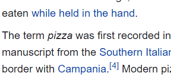
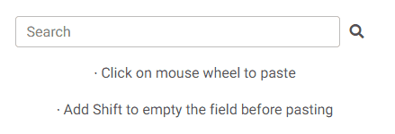
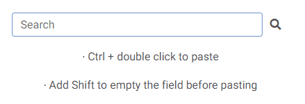

How it works:
CAVEATS
The extension does not work on:
- Protected pages like about:addons and about:config and domains like addons.mozilla.org or support.mozilla.org.
Firefox does not let extensions work by default on that kind of pages to ensure user security and privacy. - The New Tab page (the page that opens when you click on the + sign in Firefox). Same as above, this is standard for all extensions.
- The browser's URL bar and the search bar that appears when pressing Ctrl+F (because those are outside of the browsing window).
COPY

- Select some text and it will get copied automatically.
- To bypass the auto-copy hold down the Ctrl key (Command on Mac).
- You will see a short 'Copied!' alert every time you make a new selection. If you don't like it, you can deactivate it in the Options page.
PASTE
Method 1: Using middle click.

- Do a middle click (mouse wheel) on a input field and the copied text will be automatically pasted.
- Hold down the Shift key while middle clicking and the field will be emptied of any pre-existing content before pasting.
- You can deactivate this functionality in the Options page.
- You can also choose to always empty the field before pasting, without the need of holding down the Shift key. Activate this option in the Options page.
Method 2: Using double click.

- Double click on a input field while holding down the Ctrl key (Command on Mac) and the copied text will be automatically pasted.
- Hold down the Shift key while double clicking and the field will be emptied of any pre-existing content before pasting.
- You can deactivate this functionality in the Options page.